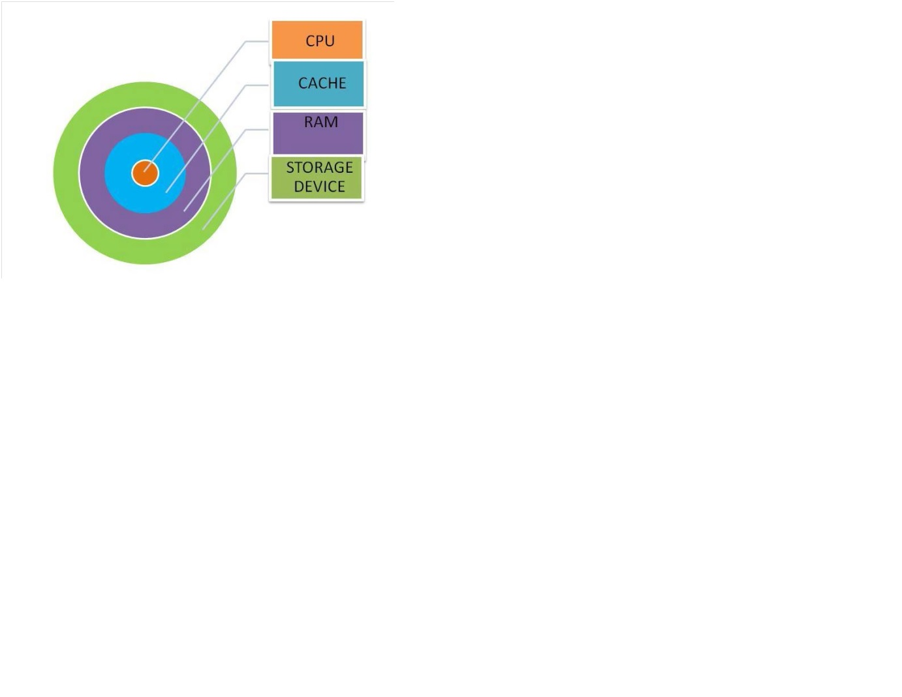

There are two primary manufacturers of computer microprocessors. Intel and Advanced Micro Devices (AMD) lead the market in terms of speed and quality. Intel's desktop CPUs include Celeron, Pentium and Core. AMD's desktop processors include Sempron, Athlon and Phenom. Intel makes Celeron M, Pentium M and Core mobile processors for notebooks. AMD makes mobile versions of its Sempron and Athlon, as well as the Turion mobile processor which comes in Ultra and Dual-Core versions. Both companies make both single-core and multi-core processors.
Each processor has a clock speed which is measured in gigahertz (GHz). Also, a processor has a front side bus which connects it with the system's random access memory (RAM.) CPUs also typically have two or three levels of cache. Cache is a type of fast memory which serves as a buffer between RAM and the processor. The processor's socket type determines the motherboard type where it can be installed.
If you're thinking about upgrading your processor yourself, you must check your motherboard specs first. The CPU you install must have the same socket size as the slot on the motherboard. Also, when you install a new processor, you may need to install a heat sink and fan. This is because faster processors produce more heat than slower ones. If you fail to protect your new CPU from this heat, you may end up replacing the processor.
When it comes to processors, size matters. Whether you're buying a new computer or upgrading your old one, you must get the fastest processor you can afford. This is because the processor will become obsolete very quickly. Choosing a 3.6 GHz processor over a 2 GHz today can buy you several years of cheap computing time. Also check the speed of the front side bus (FSB) when purchasing your new computer or CPU. A front side bus of 800 MHz or greater is essential for fast processing speeds. The processor's cache is also important. Make sure it has at least 1 MB of last level cache if your computing needs are average. If you're an extreme gamer or if you run intensive graphics programs, get the processor with the largest cache that fits your budget. There can be hundreds of dollars' difference between the cheapest processors and the most expensive ones. However, investing just a little extra cash can get you a much better processor.
Getting a processor with a dual, triple or quad core can make a significant difference in the processing power of your computer. It's like having two, three or four separate processors installed on your computer at one time. These processors work together to make your computer multitask faster and with greater efficiency. Getting a CPU with a larger front side bus can enhance the processor's ability to communicate with RAM, which will increase your computer's overall speed.
The clock speed of a computer processor determines the rate at which a processor executes instructions on data. Today this rate of execution is expressed in billions of instructions per second. Though having a computer processor with a high clock speed is advantageous, it alone is not the only factor that dictates overall system performance. Higher clock speeds increase all system tasks, such as web browsing, movie encoding, and system utilities like anti-virus software.
In order to understand the concept of big and little endian, you need to understand memory. Sometimes memory can be said as byte-addresseable in which each address stores one byte. If it is said as nybble-addressable, which means each memory address stores one nybble. Storing Words in Memory We split the 32 bit quantity into 4 bytes. For example, suppose we have a 32 bit quantity, written as 90AB12CD16, which is hexadecimal. Since each hex digit is 4 bits, we need 8 hex digits to represent the 32 bit value. So, the 4 bytes are: 90, AB, 12, CD where each byte requires 2 hex digits. It turns out there are two ways to store this in memory.
In big endian, you store the most significant byte in the smallest address. Here's how it would look:
| Address | Value |
| 1000 | 90 |
| 1001 | AB |
| 1002 | 12 |
| 1003 | CD |
In little endian, you store the least significant byte in the smallest address. Here's how it would look:
| Address | Value |
| 1000 | CD |
| 1001 | 12 |
| 1002 | AB |
| 1003 | 90 |
To remember which is which, recall whether the least significant byte is stored first (thus, little endian) or the most significant byte is stored first (thus, big endian).
Different ISAs use different endianness. For example, DEC and IBMs(?) are little endian, while Motorolas and Suns are big endian. MIPS processors allowed you to select a configuration where it would be big or little endian.
Why is endianness so important? Suppose you are storing int values to a file, then you send the file to a machine which uses the opposite endianness and read in the value. You'll run into problems because of endianness. You'll read in reversed values that won't make sense. The solution is to send 4 byte quantities using network byte order which is arbitrarily picked to be one of the endianness (not sure if it's big or little, but it's one of them). If your machine has the same endianness as network byte order, then great, no change is needed. If not, then you must reverse the bytes. Endianness only makes sense when you want to break a large value (such as a word) into several small ones. You must decide on an order to place it in memory. However, if you have a 32 bit register storing a 32 bit value, it makes no sense to talk about endianness. The register is neither big endian nor little endian. It's just a register holding a 32 bit value. The rightmost bit is the least significant bit, and the leftmost bit is the most significant bit. There's no reason to rearrange the bytes in a register in some other way. Endianness only makes sense when you are breaking up a multi-byte quantity, and attempting to store the bytes at consecutive memory locations. In a register, it doesn't make sense. A register is simply a 32 bit quantity, b31....b0, and endianness does not apply to it.
Common file formats and their endian order are as follows:
| Adobe Photoshop | Big Endian |
| BMP (Windows and OS/2 Bitmaps) | Little Endian |
| Variable | |
| GIF | Little Endian |
| IMG (GEM Raster) | Big Endian |
| JPEG | Big Endian |
| FLI (Autodesk Animator) | Little Endian |
| MacPaint | Big Endian |
| PCX (PC Paintbrush) | Little Endian |
| PostScript | Not Applicable (text!) |
| POV (Persistence of Vision ray-tracer) | Not Applicable (text!) |
| QTM (Quicktime Movies) | Little Endian (on a Mac!) |
| Microsoft RIFF (.WAV & .AVI) | Both |
Well-known processor architectures that use the little-endian format include x86 (including x86-64),6502 (including 65802, 65C816), Z80 (including Z180, eZ80 etc.), MCS-48, 8051, DEC Alpha, Altera Nios II, Atmel AVR, SuperH, VAX, and, largely, PDP-11.
Well-known processors that use the big-endian format include Motorola 6800 and 68k, Xilinx Microblaze, IBM POWER, and System/360 and its successors such as System/370, ESA/390, and z/Architecture. The PDP-10 also used big-endian addressing for byte-oriented instructions. SPARC historically used big-endian until version 9, which is bi-endian, similarly the ARM architecture was little-endian before version 3 when it became bi-endian, and the PowerPC and Power Architecture descendants of POWER are also bi-endian (see below).
Some architectures (including ARM versions 3 and above, PowerPC, Alpha, SPARC V9, MIPS, PARISC,SuperH SH-4 and IA-64) feature a setting which allows for switchable endianness in data segments, code segments or both. This feature can improve performance or simplify the logic of networking devices and software. The word bi-endian, when said of hardware, denotes the capability of the machine to compute or pass data in either endian format. Many of these architectures can be switched via software to default to a specific endian format (usually done when the computer starts up); however, on some systems the default endianness is selected by hardware on the motherboard and cannot be changed via software (e.g., the Alpha,which runs only in big-endian mode on the Cray T3E). Note that the term "bi-endian" refers primarily to how a processor treats data accesses. Instruction accesses (fetches of instruction words) on a given processor may still assume a fixed endianness,even if data accesses are fully bi-endian, though this is not always the case, such as on Intel's IA-64-based Itanium CPU, which allows both.Note, too, that some nominally bi-endian CPUs require motherboard help to fully switch endianness. For instance, the 32-bit desktop-oriented PowerPC processors in little-endian mode act as littleendian from the point of view of the executing programs but they require the motherboard to perform a 64-bit swap across all 8 byte lanes to ensure that the little-endian view of things will apply to I/O devices. In the absence of this unusual motherboard hardware, device driver software must write to different addresses to undo the incomplete transformation and also must perform a normal byte swap. Some CPUs, such as many PowerPC processors intended for embedded use, allow per-page choice of endianness..
BSNL Fibre to the Home (FTTH) Broadband. BSNL launched Fibre services for broadband, IPTV, video on demand, interactive gaming, video conferencing, high-speed lease line, voice services, etc.. The single optical fibre will cater to 32 customers with high speed bandwidth. Now, BSNL will offer high speed broadband access up to 100 Mbps with facilities of multi-channel IPTV, video/audio on demand, interactive gaming, conferencing, high-speed lease line, voice services by using this technology,”
The FTTH service is based on a world class proven technology which is Gigabit Passive Optical Network (GPON). As name suggests, the technology can support a data speed (or bandwidth) up to 2.5 Gbps on fibre. At present no technology (wireless or wireline) in the world matches the GPON in providing stupendous data speed of 2.5 Gbps without compromising the Quality of service (QoS) on consistent basis and we take great pleasure to inform you that BSNL is the only service provider in India that has brought this technology to you. Connectivity via FTTH: BSNL will extend fibre from its nearest Central Office (CO) location directly or through franchisee and install HONT and battery backup at the customers identified locations. The services such as Voice, Broadband, IPTV etc. will be enabled as per the customer”s request plans for the same.
Basic internet Access Service controlled and uncontrolled from 256Kbps to 1000Mbps.
You do not want to use clean all on a SSD disk often. Having every sector written over to 0 on a SSD can help reduce it's life span.
OCZ Octane 1TB SSD :Larger Capacity and Faster Performance
The allocation of a computer system and its resources to more than one concurrent application, job or user. The operating system can run MORE than one program. It divides the use of CPU among the programs on time sharing basis. For example, let us say there are two programs waiting in the pool to be executed by the CPU. So, the OS picks the first program and executes. If the program has some I/O (which means input/output) operations involved, then it puts this program in the queue and picks the second program and executes, meanwhile the first program receiving its input. Since the working of OS and CPU will be fast, it looks as if both the programs are executed simultaneously.
The ability to execute more than one task at the same time For example, let us say you are printing a documet of 100 pages. While your computer is performing that, you still can do other jobs like typing a new document. So, more than one task is performed. One of the main differences between multiprogramming and multitasking is, "In multiprogramming, a user cannot interact (everything is decided by OS, like picking the next program and sharing on time basis, etc...) where as in multitasking, a user can interact with the system (you can type a letter, while the other task of printing is going on)".
Simultaneous execution of instructions by multiple processors within a single computer. There will be more than one processor. So, a single program can be divided into pieces (like modules) and can be processed by the multi processors or sometimes, each processor can handle individual programs. (i.e If you have multiprocessing system, then it can either do multiprogramming as well as multitasking as well as multithreading). In Multiprocessing, each process will has its own system resources.
Executing more than one thread parallely using a single processor. This type of programming helps when more than one client uses it. For example, let us take our DB. While I'm typing this post, there would be someone else, doing the same type of job. If DB is not having a multithread option, then not more than one person will be able to do the same job. It will look like multiprocessing, that is a single program processed by more than one processor. But in multithreading, there is not a must that there should be several processors with individual resources, which actually increases the overhead of operating system to start/stop the resources everytime. So here, a single program is divided into threads (which is a lightweight program). Then the part which is accessed by more than one client (for eg "Reply" and typing post in DB) alone will be executed as threads (making duplicates for each client), instead of running the whole program. Once when the purpose is solved, the thread will be deleted. A thread is a stream of instructions within a process. Each thread has its own instruction pointer, set of registers and stack memory. The virtual address space is process specific, or common to all threads within a process. So, data on the heap can be readily accessed by all threads, for good or ill.
Multi-threading is a more "light weight" form of concurrency: there is less context per thread than per process. As a result thread lifetime, context switching and synchronisation costs are lower. The shared address space (noted above) means data sharing requires no extra work.
Multi-processing has the opposite benefits. Since processes are insulated from each other by the OS, an error in one process cannot bring down another process. Contrast this with multi-threading, in which an error in one thread can bring down all the threads in the process. Further, individual processes may run as different users and have different permissions.
Multiprogramming is a rudimentary form of parallel processing in which several programs are run at the same time on a uniprocessor . Since there is only one processor, there can be no true simultaneous execution of different programs. Instead, the operating system executes part of one program, then part of another, and so on. To the user it appears that all programs are executing at the same time.
Multitasking, in an operating system, is allowing a user to perform more than one computer task (such as the operation of an application program) at a time. The operating system is able to keep track of where you are in these tasks and go from one to the other without losing information.
Multithreading is the ability of a program or an operating system process to manage its use by more than one user at a time and to even manage multiple requests by the same user without having to have multiple copies of the program running in the computer
SCSI (pronounced SKUH-zee and sometimes colloquially known as "scuzzy"), the Small Computer System Interface, is a set of ANSI standard electronic interfaces that allow personal computers to communicate with peripheral hardware such as disk drives, tape drives, CD-ROM drives, printers, and scanners faster and more flexibly than previous interfaces. Developed at Apple Computer and still used in the Macintosh, the present set of SCSIs are parallel interfaces. SCSI ports continue to be built into many personal computers today and are supported by all major operating systems. A computer is full of busses --highways that take information and power from one place to another. For example, when you plug an MP3 player or digital camera into your computer, you're probably using a universal serial bus (USB) port. Your USB port is good at carrying the data and electricity required for small electronic devices that do things like create and store pictures and music files. But that bus isn't big enough to support a whole computer, a server or lots of devices simultaneously. For that, you'd need something more like SCSI. SCSI originally stood for Small Computer System Interface, but it's really outgrown the "small" designation. It's a fast bus that can connect lots of devices to a computer at the same time, including hard drives, scanners, CD-ROM/RW drives, printers and tape drives. Other technologies, like serial-ATA (SATA), have largely replaced it in new systems, but SCSI is still in use.
In addition to the increased bus speed, Ultra320 SCSI uses packeted data transfer, increasing its efficiency. Ultra2 was also the last type to have a "narrow," or 8-
bit, bus width.
All of these SCSI types are parallel -- bits of data move through the bus simultaneously rather than one at a time. The newest type of SCSI, called Serial Attached SCSI (SAS), uses SCSI commands but transmits data serially. SAS uses a point-to-point serial connection to move data at 3.0 gigabits per second, and each
SAS port can support up to 128 devices or expanders.
A SCSI controller coordinates between all of the other devices on the SCSI bus and the computer. Also called a host adapter, the controller can be a card that you plug into an available slot or it can be built into the motherboard. The SCSI BIOS is also on the controller. This is a small ROM or Flash memory chip that contains the software needed to access and control the devices on the bus.
Each SCSI device must have a unique identifier (ID) in order for it to work properly. For example, if the bus can support sixteen devices, their IDs, specified through a hardware or software setting, range from zero to 15. The SCSI controller itself must
use one of the IDs, typically the highest one, leaving room for 15 other devices on the bus. Internal devices connect to a SCSI controller with a ribbon cable. External SCSI devices attach to the controller in a daisy chain using a thick, round cable.
(Serial Attached SCSI devices use SATA cables.) In a daisy chain, each device connects to the next one in line. For this reason, external SCSI devices typically
have two SCSI connectors -- one to connect to the previous device in the chain, and the other to connect to the next device.
The cable itself typically consists of three layers::
1. Inner layer: The most protected layer, this contains the actual data being sent.
2. Media layer: Contains the wires that send control commands to the device.
3. Outer layer: Includes wires that carry parity information, which ensures that the data is correct.
Different SCSI variations use different connectors, which are often incompatible with one another. These connectors usually use 50, 68 or 80 pins. SAS uses smaller, SATA-compatible connectors.
FireWire is a way to connect different pieces of equipment so they can easily and quickly share information. Originally created by Apple and standardized in 1995 as the specification IEEE 1394 High Performance Serial Bus, FireWire is very similar to Universal Serial Bus (USB). The designers of FireWire had several particular goals in mind when they created the standard:
FireWire is a method of transferring information between digital devices, especially audio and video equipment. Also known as IEEE 1394, FireWire is fast -- the latest version achieves speeds up to 800 Mbps. At some time in the future, that number is expected to jump to an unbelievable 3.2 Gbps when manufacturers overhaul the
current FireWire cables .You can connect up to 63 devices to a FireWire bus. Windows operating systems (98 and later) and Mac OS (8.6 and later) both
support it.
Let's say you have your digital camcorder connected to your home computer. When your computer powers up, it queries all of the devices connected to the bus and assigns each one an address, a process called enumeration. FireWire is plug-and-play, so if you connect a new FireWire device to your computer, the operating system auto-detects it and asks for the driver disc. If you've already installed the device, the computer activates it and starts talking to it. FireWire devices are hot pluggable, which means they can be connected and disconnected at any time, even with the power on.
FireWire Specifications
The original FireWire specification, FireWire 400 (1394a), was faster than USB when it came out.
FireWire 400 is still in use today and features:
1.Transfer rates of up to 400 Mbps
2.Maximum distance between devices of 4.5 meters (cable length)
The release of USB 2.0 -- featuring transfer speeds up to 480 Mbps and up to 5 meters between devices -- closed the gap between these competing standards. But in 2002, FireWire 800 (1394b) started showing up in consumer devices, and USB 2.0 was left in the dust. FireWire 800 is capable of:
1.Transfer rates up to 800 Mbps
2.Maximum distance between devices of 100 meters (cable length)
The faster 1394b standard is backward-compatible with 1394a.
The memory organization of a system is shown below:
At the core is CPU, and then are cache, then RAM and then storage device.
When an application starts or data is to be read/written or any operation is to be performed then the data and commands associated with the specific operation are shifted from a slow moving storage device (magnetic device - hard disk, optical device – CD drive etc.) to a faster device. This faster device is RAM – Random Access Memory. This RAM is type of DRAM (Dynamic Random Access Memory). RAM is placed here because it is a faster device, and whenever data/commands/instructions are needed by Processor, they provide them at a faster rate than slow storage devices. They serve as a cache memory for the storage devices. Although they are much faster than slow storage device but the processor processes at much a faster pace and they are not able to provide the needed data/instructions at that rate. So there is need of a device that is faster than RAM which could keep up with the speed of processor needs. Therefore the data required is transmitted to the next level of fast memory, which is known as CACHE memory.
CACHE is also a type of RAM, but it is Static RAM – SRAM. SRAM are faster and costlier then DRAM because it has flip-flops (6 transistors) to store data unlike DRAM which uses 1 transistor and capacitor to store data in form of charge.
Moreover they need not be refreshed periodically (because of bistable latching circuitry) unlike DRAM making it faster.
This memory is generally divided into different level. In the following figure we see the process flow:
Let us suppose that the system has cache of three levels (level means that overall cache memory is split into different hardware segments which vary in their processing speed and memory). From RAM data is transferred into cache of 3rd
level (L3 cache). L3 cache is a segment of overall cache memory. L3 cache is faster than RAM but slower then L2 cache. To further fasten up the process cache of second order L2 cache are used. They are located at immediate
vicinity of processor. But in some of the modern processors L2 cache is inbuilt making the process faster. It should be noted that it is not necessary that a system has 3 levels of cache; it might have 1 or 2 level of cache. At the core level
is cache of first level that is L1 cache memory. The commonly used commands/instructions/data is stored in this section of memory. This is built in the processor itself. Thus this is fastest of all the cache memory.
An "intranet" is the generic term for a collection of private computer networks within an organization. An "extranet" is a computer network that allows controlled access from the outside for specific business or educational purposes. Intranets and extranets are communication tools designed to enable easy information sharing within workgroups.